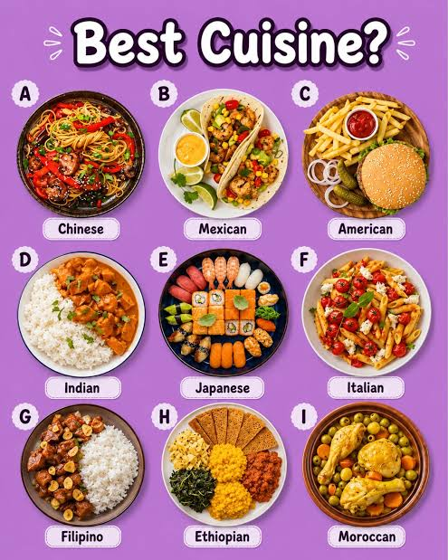

Global cuisines reflect a rich tapestry of cultural traditions. Asian food features vibrant spices, and multiple cusines while European cooking celebrates rich pastries, olive oil, and wine. Latin American dishes offer bold, fresh ingredients, Middle Eastern fares utilize hearty grains and aromatic herbs, and African gastronomy delights with slow-cooked stews and unique regional grains
